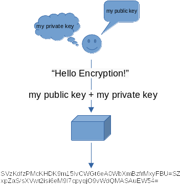
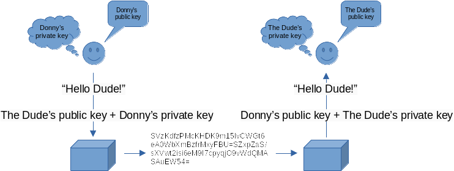

Assignment 5: Encrypted Graphical User Interface¶
Introduction¶
So we have finally arrived at the end. Over the course of the last four assignments you have built, from the ground up, a feature rich program in Python. The code that you have written enables a person to write personal journal entries, publish those entries to an online server, and enrich them with data from web API’s. Now it’s time to bring all of these features together by moving them from the command line to the windowed world of the graphical user interface.
For the past two months, partnering organizations (e.g., ICS 32 students :) ) have been raising concerns over the poor security and privacy of the ICS 32 Distributed Social platform. In response to the concerns raised by its partners, the ICS32 Distributed Social organization (e.g., ICS 32 instructors) has implemented a new authentication scheme. Rather than rely on a user name and password, users will now be required to supply an ed25519 public-key with each message. Additionally, all messages sent to the server must first be encrypted with the DSP server’s public key.
So for this assignment you will need to update your program to support the new authentication process for the DSP server and integrate your existing code into a new graphical interface using the Tkinter graphical toolkit.
Summary of Program Requirements¶
Subclass the Profile class in your DS program to support encryption and public key authentication.
Read and understand documentation for a 3rd party library.
Update your DS program to communicate with the new DS Server.
Modify and extend the ICS 32 DS Demo Tkinter interface.
Integrate existing code with Tkinter widgets.
Modify and update Tkinter widgets to display program information to a user.
Learning Goals¶
Use inheritance to extend class functionality
Install and use 3rd party libraries
Learn how to build basic Graphical User Interfaces with Tkinter and Python.
Write event handlers and callback functions.
Structure and organize a GUI program with classes.
Program Requirements¶
Part 1¶
The ICS32 Distributed Social organization has decided to implement the NaCl networking and encryption library to help strengthen the security of its social messaging platform. Rather than implement the NaCl specification directly, the DS org will use a 3rd party library that is already written in Python called PyNaCl. The PyNaCl library supports the use of public key encryption using public and private keys. The following diagram depicts the basic process for using public and private keys to encrypt and decrypt data.

You can think of the role of public and private keys in public key encryption like a username and password. While it is safe to share a public key (username), you would never want to share a private key (password). When both public and private keys are combined, the public key encryption algorithm will use them to encrypt data into a format that can only be decrypted with the same public and private keys. This is the method you will use to add encryption to all posts entries and bio stored in your program’s dsu file.
However, since we still want our messages to be readable from the DS website, we will also need to add support for encrypting our post information using a key that the DS server can use to decrypt messages. Fortunately, this process is nearly identical to what you will use for local encryption to your dsu file. The following diagram depicts the basic process for using public and private keys to share encrypted data.

Rather than encrypt a message using a public key that we create, we encrypt using the public key of the source where we want to share our message. This means that we need a way to exchange public keys with the DS server. To keep things as consistent as possible, the DS organization has modified the token key used by its protocol to store the public encryption keys exchanged between client programs and the server. But more on this change a little bit later.
For Part 1, you will create the following new modules:
NaClDSEncoder.py: A helper module provided for you, complete.
NaClProfile.py: A template class provided for you, incomplete.
To prepare your ICS32 DS program for network communication using NaCl, there are a number of tasks you must complete. They have been divided into individual parts below to help you prioritize your program requirements.
Installing the PyNaCl Package¶
The first thing you will need to do is install the PyNaCl package to your instance of Python:
pip install pynacl
If all goes well, you should see a message that is similar to “Successfully installed pynacl-1.4.0”. To verify that the package was installed, open up your Python shell and type:
>>> import nacl
>>>
If you receive any response other than a new line of input, it’s likely that pip installed the package to a different version of Python. Check your messages and make sure that you are testing the package in the same instance of the Python shell as where you installed the package.
Prepare your Environment¶
Thankfully, the DSP org has released the NaClDSEncoder module (provided for you in the starter repository) to abstract away some of the steps required to interact with their new encrypted platform. So the next thing you will want to do is download the module and test it.
A simple test is included in the following snippet, you are free to use it to validate that your environment is properly configured. You may also find the use of the NaClDSEncoder class in the test class a useful reference for your assignment code.
# NaClDSEncoder_test.py
# Simple test harness for the NaClDSEncoder class
#
# ICS 32
# Mark S. Baldwin
import unittest
from NaClDSEncoder import NaClDSEncoder
from nacl.public import PrivateKey, PublicKey, Box
class TestNaClDSEncoder(unittest.TestCase):
def test_generate(self):
# create an NaClDSEncoder object
nacl_enc = NaClDSEncoder()
# generate new keys
nacl_enc.generate()
# typically in a unittest printing this way is unnecessary
# including here for demonstration purposes...
# use print to display the keys, notice how the keypair is
# just the public and private keys combined.
print('\n')
print(f'keypair: {nacl_enc.keypair}')
print(f'public key: {nacl_enc.public_key}')
print(f'private key: {nacl_enc.private_key}')
self.assertEqual(len(nacl_enc.keypair), 88)
self.assertEqual(nacl_enc.public_key, nacl_enc.keypair[:44])
self.assertEqual(nacl_enc.private_key, nacl_enc.keypair[44:])
def test_encode_public(self):
# Use the NaClDSEncoder to create new keys
test_keys = NaClDSEncoder()
test_keys.generate()
# Test the NaClDSEncoder using the test_keys
nacl_enc = NaClDSEncoder()
pkey = nacl_enc.encode_public_key(test_keys.public_key)
self.assertEqual(type(pkey), PublicKey)
def test_encode_private(self):
# Use the NaClDSEncoder to create new keys
test_keys = NaClDSEncoder()
test_keys.generate()
# Test the NaClDSEncoder using the test_keys
nacl_enc = NaClDSEncoder()
prvkey = nacl_enc.encode_private_key(test_keys.private_key)
self.assertEqual(type(prvkey), PrivateKey)
if __name__ == '__main__':
unittest.main()
If you have everything set up properly, you should see some output that will look similar to the following (NOTE: your values will be different every time you run the generate() function!):
..
keypair: ziq0wkuDE0n0i+SFBtTEE1w9y/gG9C19NuAE8b8d/Qo=8ldBMVgC8QkOPl9nBKikIc+fLxUCuadqfAOXl90MoiA=
public key: ziq0wkuDE0n0i+SFBtTEE1w9y/gG9C19NuAE8b8d/Qo=
private key: 8ldBMVgC8QkOPl9nBKikIc+fLxUCuadqfAOXl90MoiA=
.
----------------------------------------------------------------------
Ran 3 tests in 0.001s
OK
Adding Support for Encryption¶
Next, you will need to write a new class to handle the new encryption policies required by the DSP org. Since the DSP server will now expect your program to authenticate with a public key and send posts that have been encrypted using the DSP public key, you are going to need to rethink the way your current program works. Fortunately, the Profile module that you have been using in your DSP program, is still quite useful. Therefore, the best course of action is probably to subclass the Profile class. To help you with this task, you will use the following skeleton to get started (also included in the starter repository):
# TODO: Install the pynacl library so that the following modules are available
# to your program.
import nacl.utils
from nacl.public import PrivateKey, PublicKey, Box
# TODO: Import the Profile and Post classes
# TODO: Import the NaClDSEncoder module
# TODO: Subclass the Profile class
class NaClProfile:
def __init__(self):
"""
TODO: Complete the initializer method. Your initializer should create the follow three
public data attributes:
public_key:str
private_key:str
keypair:str
Whether you include them in your parameter list is up to you. Your decision will frame
how you expect your class to be used though, so think it through.
"""
pass
def generate_keypair(self) -> str:
"""
Generates a new public encryption key using NaClDSEncoder.
TODO: Complete the generate_keypair method.
This method should use the NaClDSEncoder module to generate a new keypair and populate
the public data attributes created in the initializer.
:return: str
"""
pass
def import_keypair(self, keypair: str):
"""
Imports an existing keypair. Useful when keeping encryption keys in a location other than the
dsu file created by this class.
TODO: Complete the import_keypair method.
This method should use the keypair parameter to populate the public data attributes created by
the initializer.
NOTE: you can determine how to split a keypair by comparing the associated data attributes generated
by the NaClDSEncoder
"""
pass
"""
TODO: Override the add_post method to encrypt post entries.
Before a post is added to the profile, it should be encrypted. Remember to take advantage of the
code that is already written in the parent class.
NOTE: To call the method you are overriding as it exists in the parent class, you can use the built-in super keyword:
super().add_post(...)
"""
"""
TODO: Override the get_posts method to decrypt post entries.
Since posts will be encrypted when the add_post method is used, you will need to ensure they are
decrypted before returning them to the calling code.
:return: Post
NOTE: To call the method you are overriding as it exists in the parent class you can use the built-in super keyword:
super().get_posts()
"""
"""
TODO: Override the load_profile method to add support for storing a keypair.
Since the DS Server is now making use of encryption keys rather than username/password attributes, you will
need to add support for storing a keypair in a dsu file. The best way to do this is to override the
load_profile module and add any new attributes you wish to support.
NOTE: The Profile class implementation of load_profile contains everything you need to complete this TODO. Just add
support for your new attributes.
"""
def encrypt_entry(self, entry:str, public_key:str) -> bytes:
"""
Used to encrypt messages using a 3rd party public key, such as the one that
the DS server provides.
TODO: Complete the encrypt_entry method.
NOTE: A good design approach might be to create private encrypt and decrypt methods that your add_post,
get_posts, and this method can call.
:return: bytes
"""
pass
Since we will be required to send encrypted messages to the new DSP server, we might as well add support for local encryption as well to prevent unwanted parties from reading our journal entries. Therefore, in the NaClProfile class you will extend the Profile module to not only encrypt messages that will be sent to the DSP server, but also messages stored in the .dsu file.
The comments in the skeleton code will provide you with some guidance on what you need to do. In addition to the incomplete methods, you will also need to override two methods from the Profile class. If done correctly, all of your new data attributes as well as your encrypted messages will be saved to the .dsu file passed to the save_profile method, without having to change anything else!
To learn how to encrypt and decrypt information using a keypair, you will need to consult the documentation for the module. The main page for the docs is a good place to start if you want to learn more about PyNaCl. However, since you are only required to implement a small portion of the overall PyNaCl module, you may find the examples on the Public Key Encryption page to be the most helpful. Feel free to discuss your findings on Zulip with your classmates.
Once your new Profile subclass has been completed, you can validate it by running the following program:
from Profile import Profile, Post
from NaClProfile import NaClProfile
np = NaClProfile()
kp = np.generate_keypair()
print(np.public_key)
print(np.private_key)
print(np.keypair)
# Test encryption with 3rd party public key
ds_pubkey = "jIqYIh2EDibk84rTp0yJcghTPxMWjtrt5NW4yPZk3Cw="
ee = np.encrypt_entry("Encrypted Message for DS Server", ds_pubkey)
print(ee)
# Add a post to the profile and check that it is decrypted.
np.add_post(Post("Hello Salted World!"))
p_list = np.get_posts()
print(p_list[0].get_entry())
# Save the profile
np.save_profile(PATH/TO/DSU)
print("Open DSU file to check if message is encrypted.")
input("Press Enter to Continue")
# Create a new NaClProfile object and load the dsu file.
np2 = NaClProfile()
np2.load_profile(PATH/TO/DSU)
# Import the keys
np2.import_keypair(kp)
# Verify the post decrypts properly
p_list = np2.get_posts()
print(p_list[0].get_entry())
Just remember that once post entries have been encrypted with a keypair, they can only be decrypted with the same keypair!
Encrypted Server Communication¶
Finally, you will need to make sure your new authentication and encryption interface works with the updated DSP Server. To support keypair encryption, a few changes have been made to the way the DSP Server handles messages.
# join as existing or new user
{"join": {"username": "ohhimark","password": "password123","token":"my_public_key"}}
You might recall from previous assignments, the token key was not used during join requests with the DS server. With the new public key encryption in place, you must now perform a join request using a public key that you have generated locally. The DS server will then use this public key to decrypt all of the messages that you send moving forward.
You will also need to slightly adjust the way in which you use the token value that you receive from the DS Server. Under the rules of the non-encrypted DS server you were required to send the token you received from the server in all of your messages. Now, rather than send back the server token, you will send your public key as the value of the token key.
Note
The token key in DS Protocol messages should be used to store the value of your public encryption key.
Finally, the only thing we are missing is a public key from the DS server. When you successfully join the server your response will now contain the public key used by the server to decrypt your messages:
{"response": {"type": "ok", "message": "", "token":"server_public_key"}}
So rather than return this response token to the server like you did in previous assignments, you will now need to store this value in your program somewhere and use it to encrypt your messages before sending. The encrypted_entry function that is part of the NaClProfile skeleton class is designed to support this requirement.
If you have implemented your NaClProfile class and modified your communication with the DS Server successfully, your program should continue to work as expected, just a little more secure.
Part 2¶
Once you have encryption in place, it’s time to wire everything up to a graphical user interface. For this part of the assignment you will be given a mostly functional Tkinter program to get you started. Learning graphical toolkits is a big undertaking that is typically filled with a lot of trial and error. We could spend an entire quarter mastering the Tkinter toolkit if we so desired. So, rather than get bogged down attempting to work through all of the nuances of getting a Tkinter GUI to function the way we want, you will be spending your remaining time in this class extending an existing program that already works pretty well. The following image depicts the ICS 32 DS program in it’s default state with a DSU file loaded.

However, the version that is available for you, does not yet have the features required to get to the state pictured. To make this program fully functional, you will have to start with the template (included in the starter repository) and complete all of the TODO items described in the code comments.
For Part 2, you will complete the following new modules:
a5.py: A GUI module provided for you, incomplete.
The following section is optional. You are free to jump into the a5.py code and start working on the TODO items any way you want. However, there is a lot to do for this assignment, so to mitigate some of the complexity we are providing some additional notes on how to go about completing the TODO items for this part of the assignment.
A5 Code Walkthrough¶
We strongly encourage you to take a pass at the starter code on your own first. Try and complete each TODO without using the notes included here. But if you get stuck, feel free to come here for further guidance.
Note
The line number references here might be off by 1 or 2, but should still generally take you to the associated section of the starter code. Of course, as you edit the file, the line numbers will continue to fall out of sync, so you might find it useful to keep a reference copy of the original starter code.
TODO: Line 271¶
Let’s start with the online_clicked callback. (all line numbers are from unmodified starter code file)
self.footer = Footer(self.root, save_callback=self.save_profile)
The goal here is to update the Footer initializer to support a callback for the online checkbox widget. The solution is to replicate the existing save_callback functionality:
Add a new parameter to Footer (…) after
save_callback, using the same conventions assave_callback. Check line 119, see the statementsave_callback=None? Add another parameter calledonline_callback.Now we need to do something with that new parameter. So check line 122, see how the value of the
save_callbackparameter is assigned to a private attribute calledself.savecallback? Replicate that foronline_callback. Notice, we already have a method we can use calledonline_click. The only difference, however, is that theonline_changedmethod in MainApp has a parameter: value:bool. So we also need to pass a parameter when we call the callback. Fortunately the parameter already exists for us and can be found in the initializer for footer.Next, we need to add code to
online_click, line 137. Remove the ‘pass’ keyword, and reproduce the code used insave_click, but change your attribute and method call to the new online parameter and attribute we created in step 1.Return to line 271 (though, this line number has changed now that we have added code). Update the Footer(…) initializer by adding a new parameter. The parameter name should match the parameter name you added in step 2. The value for that parameter should match the name of the
online_changedmethod in the Main class.
When done, run your program. When you click the checkbox, the footer status label should toggle between online and offline.
TODO: Line 237¶
def online_changed(self, value:bool):
If all went well in the last step, you are read to move on. I left the following code here on purpose so that you could verify that the callback you added worked:
if value == 1:
self.footer.set_status("Online")
else:
self.footer.set_status("Offline")
But really, it’s not entirely necessary here. If you like it, leave it. If you don’t, delete it. However, we already know the online status by looking at the checkmark in the checkbox.
So the goal here is to create a ‘flag’ that we can use later to check whether the user wants to submit a post to the server. So the first thing we need is a variable to server as that flag!
Go to the initializer for the MainApp class and add a new attribute, let’s call it
self._is_onlineand set it to a default value of False (since the widget also starts as unchecked).Return to online changed and add the attribute from step 1, so that the ‘value’ parameter sets the value of it.
Add a print(
self._is_online) to the end of the method and run the program. You should see output on the shell that changes from true to false when the checkbox widget is checked and unchecked.
TODO: Line 43 - edit set_text_entry method¶
def set_text_entry(self, text:str):
For this task, we just need to add some cleanup code for the editor widget.
Start by removing the ‘pass’ keyword.
Next, we need to add two lines of code: one to delete the content of the editor and one to insert new content. To the docs!
https://tkdocs.com/tutorial/widgets.html#entry
Under the Entry Contents section on the linked page above, you will see an example of how to delete and insert. Using those examples as a reference, add a delete and insert operations to the method.
To test this functionality, let’s temporarily add some sample code to your
online_changedmethod:
self.body.set_text_entry("Hello World")
Run the program. When the checkbox widget is clicked the words “Hello World” should appear in your editor.
If you get an error of something like “bad text index”, then change the first parameter in your delete and insert function calls from 0 to 0.0, it’s a weird quirk of this widget (0, works in python < 3, 0.0 works in python > 3)
TODO: Line ~197 - new profile!¶
def new_profile(self):
This really isn’t that hard. It’s mostly code you have already written. Let’s take advantage of the NaClProfile class attribute in MainApp for this task.
So when a NEW profile is created, we need to do three things:
Create a new profile.
Generate keys (if you are using NaClProfile instead of Profile)
Reset the UI.
We probably also want to keep track of the location of the file. So let’s start by creating a class attribute to hold our file path and name in the initializer for the MainApp class:
self._profile_filename = None
There’s some sample code in the new_profile method that demonstrates what we need to do, so let’s update it to fit our new attribute:
self._profile_filename = filename.name
I just changed profile_filename to self._profile_filename
Now let’s create a new NaClProfile object:
self._current_profile = NaClProfile()
Generate a keypair:
self._current_profile.generate_keypair()
And reset the UI, just in case a profile has already been loaded:
self.body.reset_ui()
We can test that our code works by printing out the keypair to the shell:
**`print(self._current_profile.keypair)`**
And that’s it! Not so bad, right?
TODO: Line ~ 212 - open profile!¶
def open_profile(self):
This task is nearly identical to the previous one, with two exceptions: First, we need to load an existing profile. So rather than generating a new keypair, we will import based on how store keys in our NaClProfile object (from a4):
self._profile_filename = filename.name
self._current_profile = NaClProfile()
self._current_profile.load_profile(self._profile_filename)
self._current_profile.import_keypair(self._current_profile.keypair)
Next, we need to add our profile data to the UI. So we reset the UI just as with the new_profile method, and then send all existing posts to the set_posts method:
self.body.set_posts(self._current_profile.get_posts())
Note that not ALL the code is being shown in these snippets, so remember to clear the UI!
Go ahead and test again with:
print(self._current_profile.keypair)
TODO: Line ~52 - set_posts!¶
def set_posts(self, posts:list):
Fortunately for this task, we have almost all the code we need to make it happen already written. We need to do two things:
Populate the
_postsattribute that has already been written for us with posts.Add those posts to the
treeviewwidget
For 1, well…this task should be well within your skillset by now. So I am going to leave it to you. It’s one line of code that assigns the parameter to the class attribute. Read the TODO comments if you get stuck.
For 2, we need to iterate on our newly populated _posts class attribute. So a for a loop that iterates on self._posts and inserts each post to the treeview widget. How do we do that? Check out the _insert_post_tree method! It takes an id and a post as parameters. You have the post, so what about the id? It can be any value, but it needs to be unique. The best way to do this is to use the length of the _posts array as the id.
Okay, less guidance now, but you have all written this type of code before…so I am sure you can get this one worked out.
TODO: line ~240 - edit the save_profile method.¶
def save_profile(self):
Saving the best for last, pun intended. Let’s do this in two steps, step 1 is offline only, and step 2 is online support.
Step 1:¶
A new post has been written and is ready to save. The first step is to create a new post object using the text that was written. Fortunately, we have a method in the Body class to get the text for us!
post = Post(self.body.get_text_entry())
Next, we need to update our GUI by adding the new post object. Are there any methods in the Body class that we can use? Take a look.
Next, we should also update our
_current_profileobject and save it. You know how to do this, you have been doing it since a2. (add_post, save_profile)Finally, let’s reset the text editor:
self.body.set_text_entry("")
Okay, we have enough code completed to run some tests:
Create a new file, write a post, and save it.
Close the program, restart it.
Open the file created in 1. You should see your post in the treeview.
Step 2:¶
Let’s get this thing online.
So at this point, your program should be saving posts to whatever dsu file is loaded into the program when the user clicks the Save Post button. If not, STOP and go back through these posts until you get there.
The last thing we need to do for a5 is send our post to the DS server when the online checkbox widget is checked, or is true. So, let’s write a conditional statement that evaluates the MainApp class attribute that we added earlier:
if self._is_online is True:
#call your server connect code.
Remember, we are still in the save_profile method, we are just adding new lines after the code we wrote in Step 1.
To complete this task, at a bare minimum we need to call the server communication code we wrote in a2.
Finally, we need to call this send function or whatever process you created in ds_client to send messages to the server from the GUI. To keep our event handling code clean, let’s create a new method called ‘publish’. In that method we will make the call to ‘send’:
def publish(self, post:Post):
ds_client.send(...)
It might be nice to add some GUI updates for usability in the self._is_online conditional. Perhaps, updating the footer label using the set_status method of the Footer class? And perhaps calling update() function to make sure all widgets refresh before the potentially long call to the server.
And that’s it. Most of what has been shared here is code you have already written. This is just a quick overview that covers one of many ways to go about implementing it.
Extra Credit¶
For this final assignment in ICS32 you will have the opportunity to receive extra credit. To receive a 4 extra credit points you must add at least one of the following features to your Tkinter GUI. You may add up to 3 features for a total of 12 extra credit.
Add title support for posts.
Add a settings menu item and interface for username and password management.
Add a toolbar with quick buttons to insert your API keywords into the editor.
Add a bio menu item and interface for editing the user bio.
Add support for editing existing posts.
Add support for editing the location of the DSU server.
Add title support for posts¶
Currently, the GUI for the ICS 32 DS program extracts the titles for the post tree viewer from the first few characters of the post. It might be nice to provide users with the ability to write a proper title for each post and use that in the post tree viewer as well. To accomplish this feature a couple of changes must happen:
The Profile and Post classes must be updated to include an additional title attribute.
The GUI must be modified to support text editing for the title.
The post tree viewer widget must be updated to display post titles.
Add a quick button toolbar for keywords¶
In assignment 3, you introduced support for adding content from 3rd party API’s to your assignments. For this feature, you will add Tkinter buttons that insert your API data into the post entry editor. To complete this feature you will need to:
Add buttons to the GUI. You may either add them in the footer frame between the status label and online checkbox, create a new ‘Toolbar’ frame class and add it above the entry editor, or add a new menu dropdown with menu items for your keywords.
You must implement the @weather feature, but you may also want to include any additional API keywords you created for assignment 3.
When a keyword is selected, the API data should be placed at the position of the cursor in the entry editor window.
Add support for post editing¶
Currently, the post editor only adds new posts. When the Save Post button is clicked, whatever content is in the entry editor widget will be saved as a new post. A more realistic way of using this program would be to allow a user to also edit their post. There are a number of ways to go about adding this feature, here are a two:
Detect when an existing post has been selected and edited and change the operation of the Save Post click event to update rather than add when appropriate.
Add new buttons to perform different operations. An ‘edit’ button, for example, would update a post. Whereas a ‘new’ button would add a post.
Add support for DSU server location editing¶
The current implementation of the program requires you to hard code in the URL for the DSU server. However, servers come and go, and in the future your users may want to move their posts to a new location. So for this feature you will be required to add a text entry widget that allows your user to edit the URL of the DSU server. (HINT: This feature pairs nicely with feature 2 and 4 in terms of the type and organization of code you will need to write).
Add a new ‘server’ item to the menu.
Open a new window when the server item is clicked.
Display current server URL in the server window.
Add a Tkinter Text or Entry widget to allow the user to change their server.
Add a Tkinter button to save and close the server window.
Save edited server URL to the DSU file.
Submitting¶
Upload all of your program files in a single .zip file to Canvas by the due date. NAME YOUR MAIN FILE a5.py. If you complete any of the extra credit items, be sure to add a README file that describes exactly which features you implemented. You can include the README in your zipped submission, but YOU MUST ALSO LEAVE A COMMENT IN CANVAS ON YOUR SUBMISSION THAT INDICATES YOU HAVE EXTRA CREDIT FEATURES IN YOUR PROGRAM. Failure to leave a comment means that we may not notice the extra credit features when grading.
Additionally, all modules that you create or edit must include the following comment on the first three lines:
# NAME
# EMAIL
# STUDENT ID
Starter Project¶
How we will grade your submission¶
This assignment will be graded on a 150-point scale, with the 150 points being allocated completely to whether or not you submitted something that meets all of the above requirements. The following rubric will be used:
- Requirements and Function | 120 pts
Does the program do what it is supposed to do?
Does the program make use of the required 3rd Party module?
Does the NaClProfile module function properly?
Have all the TODO items been completed appropriately?
Are there any bugs or errors?
- Quality and Design | 30 pts
Is the code well designed?
Is the code clearly documented?
- Extra Credit | 12 pts
Is one extra credit feature implemented and functioning as intended? 4 pts
Is a second extra credit feature implemented and functioning as intended? 4 pts
Is a third extra credit feature implemented and functioning as intended? 4 pts
By now you should be clearly documenting your code and expending effort to ensure that your code design follows the conventions we have been discussing throughout the class. Therefore, we will continue to take a strict stance on quality and design for this assignment.